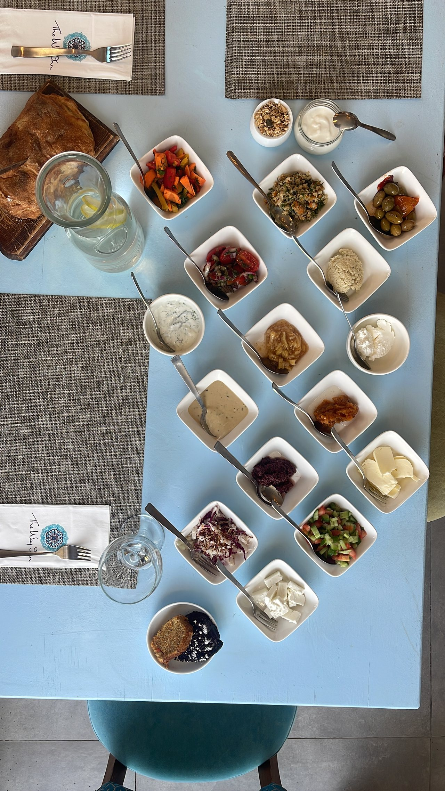
לה בופה La Buffet
לחם חם שיצא מהתנור, שולחן סלטים ים-תיכוני שופע, אור גליל דרך חלון קמרון — מדי בוקר, בבית אבן בן 250 שנה ברובע האמנים.
הבוקר
בוקר שמתחיל בלחם חם, ומסתיים בכוס קפה בחצר.
לה בופה היא ארוחת הבוקר של The Way Inn — שולחן פתוח, נדיב וביתי, שמוגש לאורחי המלון בחדר האבן הגדול ובחצר הסלולה. לחמים שנאפו אצלנו באותו בוקר, סלטים ים-תיכוניים, ממרחים, גבינות מקומיות, ביצים, פירות העונה, וקפה בנחת.
להזמין מראש
פונים לקבלה של The Way Inn לפחות יום מראש, מסכמים תאריך ומספר סועדים, ובבוקר השולחן מחכה לכם.
או להצטרף לבופה החי
בבקרים שהבופה פתוח לכל אורחי המלון — פשוט מתיישבים. (שאלו בקבלה אילו ימים פתוחים השבוע.)
השעות: 08:00–10:30 · הימים המדויקים, מחיר לסועד וכשרות — לבירור בקבלה.
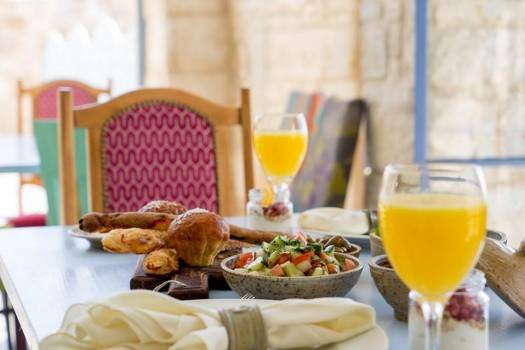
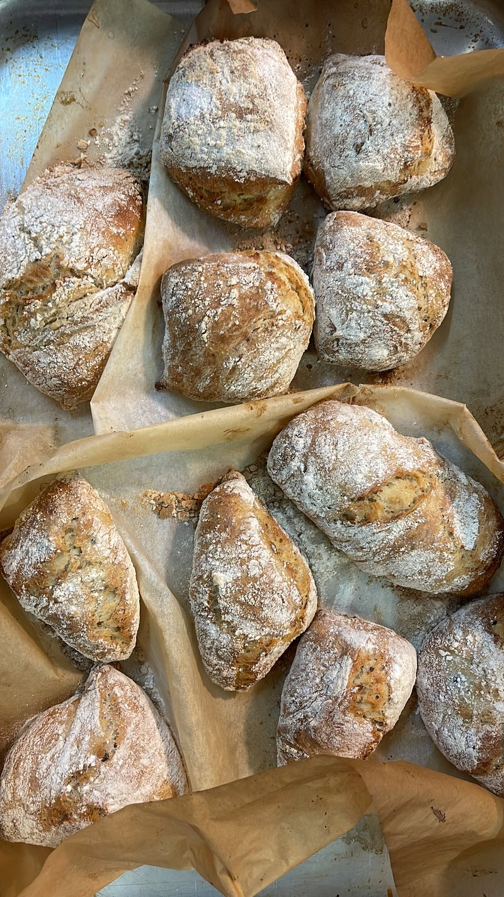
מה יש על השולחן
קטגוריות — לא לרשימת קניות, לחגיגה.
כל בוקר השולחן מתחלף בקצב של מה שגדל ונאפה היום. הנה למה אפשר לצפות. (המנות והשמות המדויקים — לאישור עם המלון.)
-
לחמים שנאפו בבית
חלות קטנות, לחם זיתים, פוקצ'ה עם זעתר — חמים מהתנור.
-
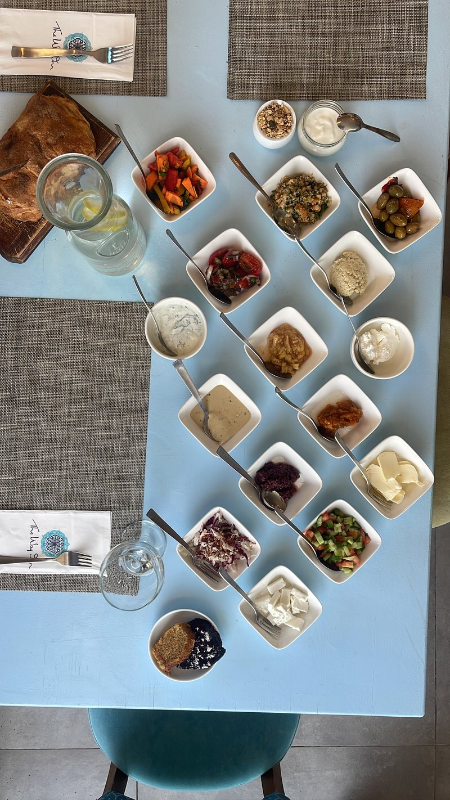
סלטים וממרחים
סלט ישראלי, סלק, מטבוחה, חציל, חומוס, טחינה — הכול מוכן אצלנו.
-
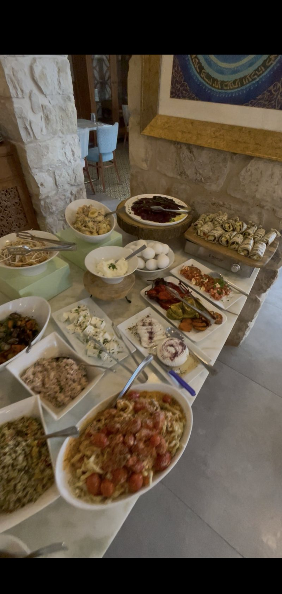
גבינות, לבנה וחמוצים
פטה, גבינות גליליות, לבנה קטיפתית, זיתים, ריבות בית.
-
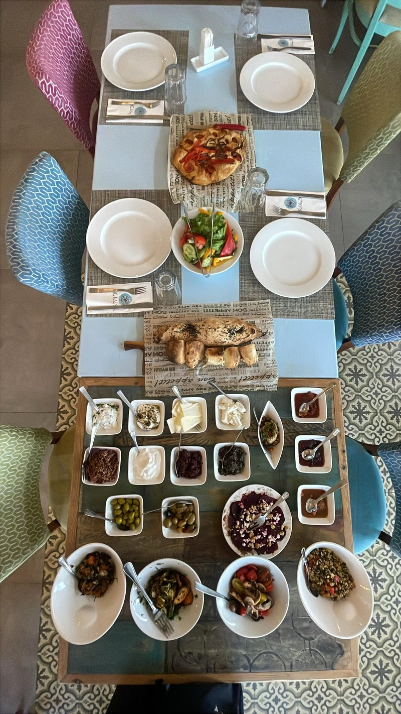
ביצים ומנות חמות
שקשוקה, ביצים לבחירה, מנה חמה של היום.
-
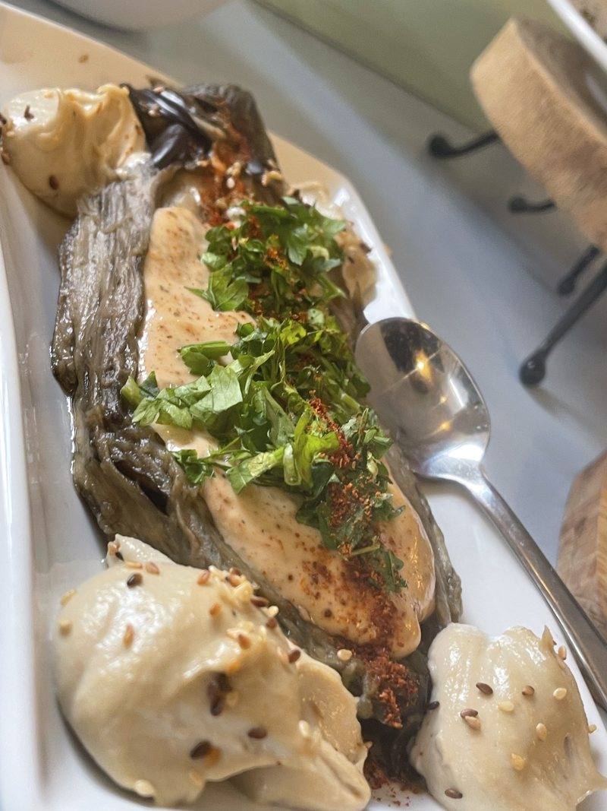
מנות שף קטנות
חציל מעושן בטחינה, ירקות צלויים — נגיעות מהמטבח של The Way Inn.
-
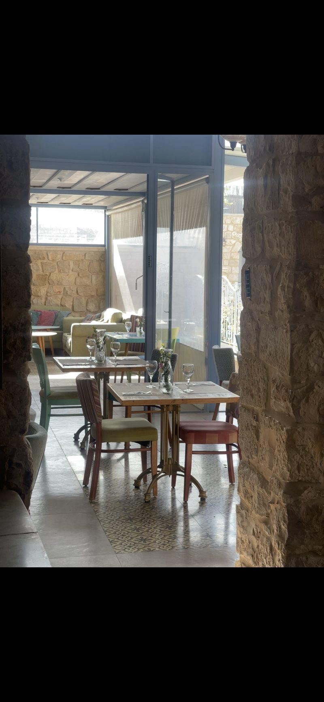
פירות, מאפים וקפה
פירות עונה, מאפי בוקר, קפה איטלקי ושלל תה.
{kind=link}
{kind=link}
{kind=link}
{kind=link}
{kind=link}
{kind=link}
{kind=link}
{kind=link}
{kind=link}
{kind=link}
{kind=link}
{kind=link}
{kind=link}
{kind=link}
{kind=link}
{kind=link}
המקום
בית אבן בן 250 שנה, בלב רובע האמנים.
לה בופה היא ארוחת הבוקר של The Way Inn — מלון בוטיק קטן בבית אבן עתיק, שיסדו השף רוני בראל ואשתו ג'נין. כעשר סוויטות סביב חצרות פתוחות, מרפסות גג לשקיעה, ספא חמאם טורקי, ורוח הצפת הישנה בכל מקום.
בבוקר, חדר האבן הגדול מתמלא באור גליל ובארומה של לחם חם. מפיות המלון רקומות במנדלת עץ-החיים — אותה מנדלה הקבועה בקיר החצר. זה לא חדר אוכל של מלון. זה הבית של בראל, נדיב כשמתארחים אצלו.
"לא לבקר בצפת — לגור בה."
להזמין חדר ב-The Way Inn ↗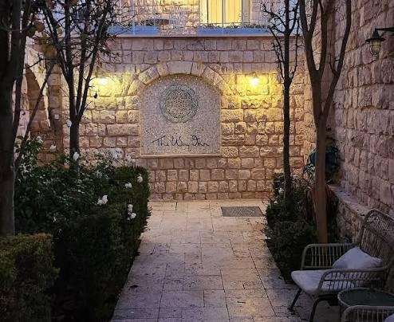
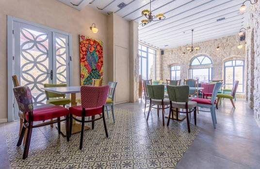
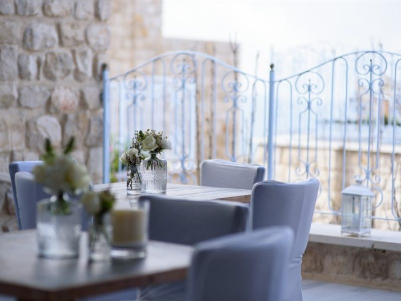
להזמין
פשוט מאוד.
פונים לקבלה של The Way Inn — ב-WhatsApp, בטלפון, או באימייל. מזמינים לפחות יום מראש, ובבוקר השולחן מחכה לכם. או, פשוט מצטרפים לבופה החי כשהוא רץ.
שעות
08:00 – 10:30
הימים המדויקים — לאישור בקבלה
כתובת
סמטת י"ז 23, צפת
בתוך The Way Inn, רובע האמנים
למי
לאורחי המלון
פתוח לסועדים מבחוץ? לבירור בקבלה
כשרות / מחיר
פרטים — בקבלה
חלביים, צמחוני · לאישור